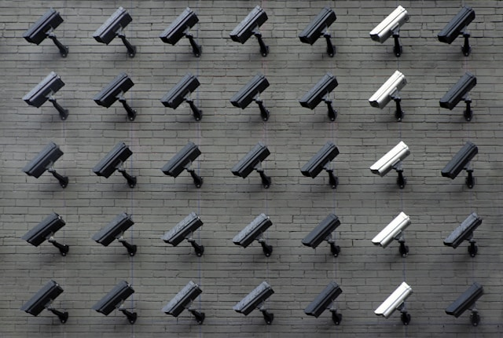
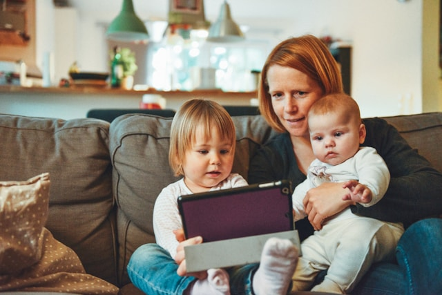

Empowering Parents: A Guide to Digital Privacy for Families
Exploring the vital topic of digital privacy and its relevance in today's connected world.
Lesson 3.1: Data Security at Home

Securing your home network is something many forget, or don't realise they should be doing. However, this is a crucial part in ensuring intruders stay out, and your data is kept safe and secure.
Securing Your Home Network
Securing Your Devices
Your home network is the entry-point to the internet for all your devices. It is pivotal to secure it to avoid unauthorised access to you and your families data. Take a look at the various steps you can take:
Each and every single device connected to your home network must be secure, it is no use just one device being secure, because each other device that is insecure is another entry-point for a hacker to gain
unauthorised access into your home network. Here's what you can do:
- Default Usernames and Passwords: The first step that is vital to be taken is changing the default username, along with the password. The username and password given at the installation of a new network,
although they may look secure, they are anything but. In fact, just your username alone conveys a lot of very useful information to potential hackers. When your home network username is visible to others,
it gives hackers an insight into a list of vulnerabilities and bugs present and that have been found in your network batch, meaning they will know exactly where to expolit your network from.
- Firewalls: These are like security guards; they monitor the network and make sure nothing suspicious gains entry into the network, adding another layer of protection.
- Enabling Encryption: Encryption is the randomisation of data into a random and unreadable format, with the only way of returning it into its original plaintext form being with a key.
What this means for the end user is, if your data does get into the wrong hands, the attacker still does not have access to your data because, they do not have the key to decrypt the data.
- Updates: Manufacturers regularly release software updates and patches, these fix known flaws that attackers can use to gain unauthorised entry and si it becomes crucial that routers and all other
devices are all updated regularly.
- Passwords: In order to keep your data secure you also need to keep the devices you store the data on secure too. To secure a device you need a strong, and unique password
which contains upper amd lowercase letters, numbers, and special characters. Best practice in regard to passwords is not associating your passwords to yourself (this only makes it easier to guess your password),
never reusing passwords across accounts or devices, changing your passwords regularly, and using a reputable and trustworthy password manager.
- Antiviruses: Installing reputable and trustworthy antiviruses will protect your devices from malware and viruses.
- Automatic Updates: Often times, there is an option to enable automatic updates, enabling this means everything that needs updating will get updated without even a click of a button from you.
- Disabling Services: When services are not in use such as USB drives, it is best to disable them as this limits the potential attack vectors.
Two-Factor Authentication
Two-factor authentication (2FA) or multi-factor authentication is a secondary authentication technique which adds an extra layer of protection. It does this by requiring a second form of verification,
this could be through a text message, an authenticator app, or even an email code.
Enabling 2FA is a must because even if a person were to know your login credentials, they would not be able to
pass the secondary check so your data will remain protected.
Lesson 2.3: Data Privacy Tips for Social Media

In this lesson we will be discussing the various data privacy tips for social media, helping you better manage and control your family's online presence.
- Privacy Settings: Most social media platforms allow you to filter and control who can and cannot see your posts, accounts, and personal information. Many also allow you to post content
to a limited amount of people or, to your close friends and family only. Reviewing and adjusting these setting according to your preferences does not take long to do and could keep you and your
family a lot safer online.
- Personal information: Social media is often used as a platform to catch up with friends and family especially those who we don't often see, however this does not mean posting personal
information online for everyone to see. One thing many forget about the internet is once it's published it is there forever, for anyone to see. So to protect yourselves by limiting sharing or
posting such things like: full names, addresses, phone numbers, school names and other personal details that could be used to identify you.
- Monitoring Activities: Regularly monitoring your children's social media accounts, ensuring they are using them all safely and appropriately. Be cautious of any early signs of cyberbullying,
interactions with strangers (even if they seem normal), and any inappropriate content.
- Risks: Educate your children, sit them down and teach them about the potential risks of oversharing on social media, these risks could include cyberbullying and identity theft.
Encourage your children to think before they send that message or post that photo on their social media accounts.
- Boundaries: Within your household set clear rules for every individual to follow, both adults and children, for social media use. This can include what social medias can be used, how much time is to
be spent on social media, the people they can or cannot connect with etc.
Following these tips will enable you to keep both yourself and family safe, allowing you all to have a safer experience on social media.